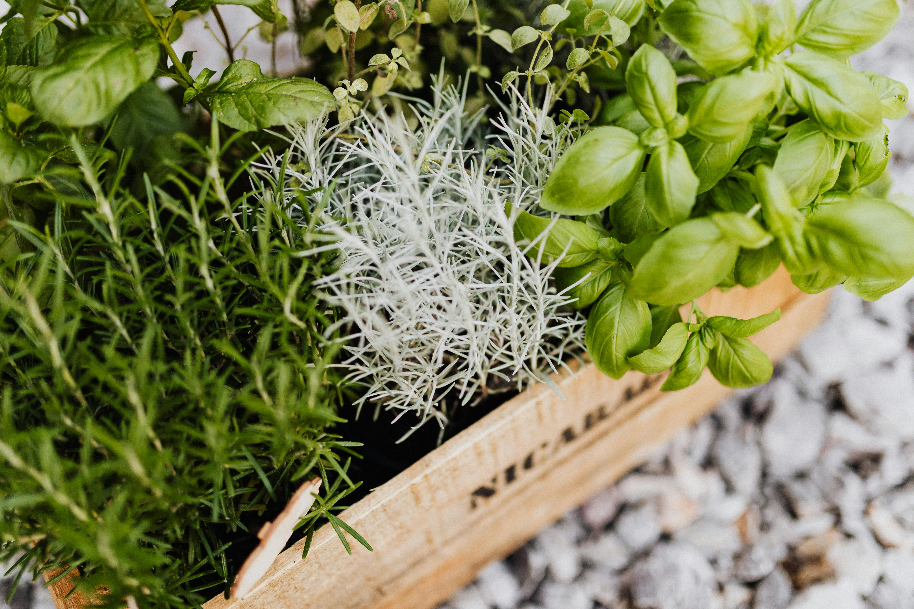
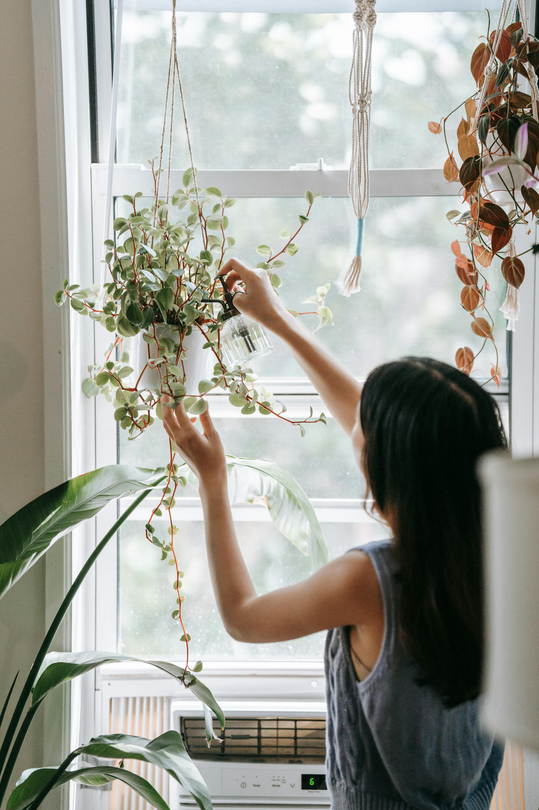
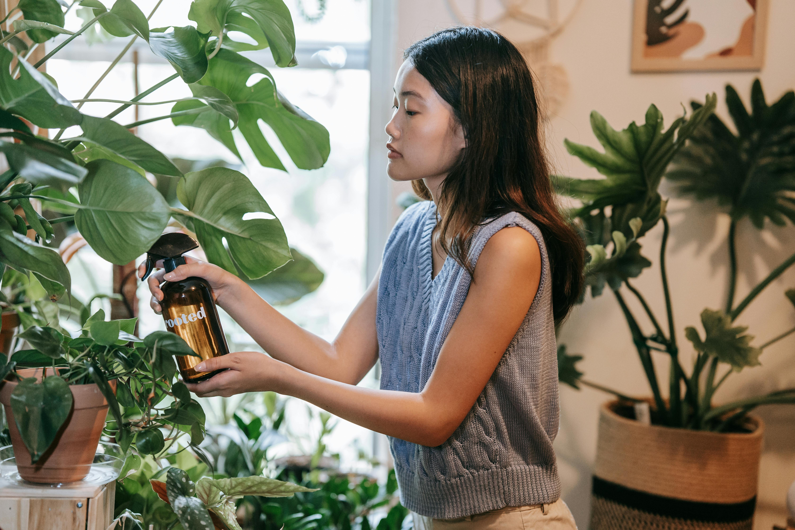

Step 1 - Pick the Right Plants
Most herbs can thrive indoors, but some fare better than others, like oregano, thyme, basil and mint
Step 2 - Select a Container with Drainage
Put each plant in a separate pot and bore a few holes in the bottom if there is none

Step 3 - Choose a Sunny Spot for your Plant
Herbs need plenty of sunshine in order to grow quickly, so select a spot with plenty of sunshine for your herbs. If there is insufficient sunlight, consider using a growlight.
Step 4 - Water Infrequently and Slowly
Your herbs need water but do not overdo it.
Step 5 - Use a Little at a time
A little bit of herbs will go a long way to add spice and depth to both food and beverages.